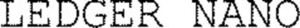

Trade Mark Journal No.2025/051 19 December 2025
WO0000001889951 (9)
Office of origin: France
Date of International Registration:16 October 2025
Date of designation in the UK:
16 October 2025

International priority date claimed: 24 April 2025
(France)
(5141937)
- Class 9
- Computer peripheral devices; integrated circuit cards [smart cards]; printed circuit boards; USB flash drives; computer hardware; apparatus and equipment for data processing, computer peripheral devices with secure microprocessor; data processing apparatus and equipment that work with chip cards, integrated circuit cards (smart cards) or microcircuit cards; devices for access and access control to data processing apparatus and equipment; identification and authentication devices for apparatus and equipment for data processing; biometric identification and authentication apparatus; identification and authentication devices and instruments; security hardware tokens for user authentication; biometric identification systems; biometric identification apparatus; biometric voice, fingerprint and retinal recognition systems; chips (integrated circuits); integrated circuits; printed circuits, printed circuits for integrated circuit cards [smart cards]; microcircuits; secure microprocessors; electronic chip cards; integrated circuit cards; microcircuit cards; integrated circuit cards [smart cards]; electronic cards; contactless cards; downloadable e-wallet; non-downloadable e-wallet (electronic apparatus); downloadable cryptographic keys for receiving and spending cryptocurrency; non-downloadable cryptographic keys for receiving and spending cryptocurrency; readers for cards, chip cards, cards with integrated circuits or microcircuits, integrated circuit cards [smart cards]; secure encoded cards; encoded cards containing security features for authentication purposes; encoded cards containing security features for authentication purposes.
LEDGER
Representative: Monsieur THRIERR Olivier TMARK CONSEILS, 9 avenue Percier, F-75008 PARIS, FRANCE